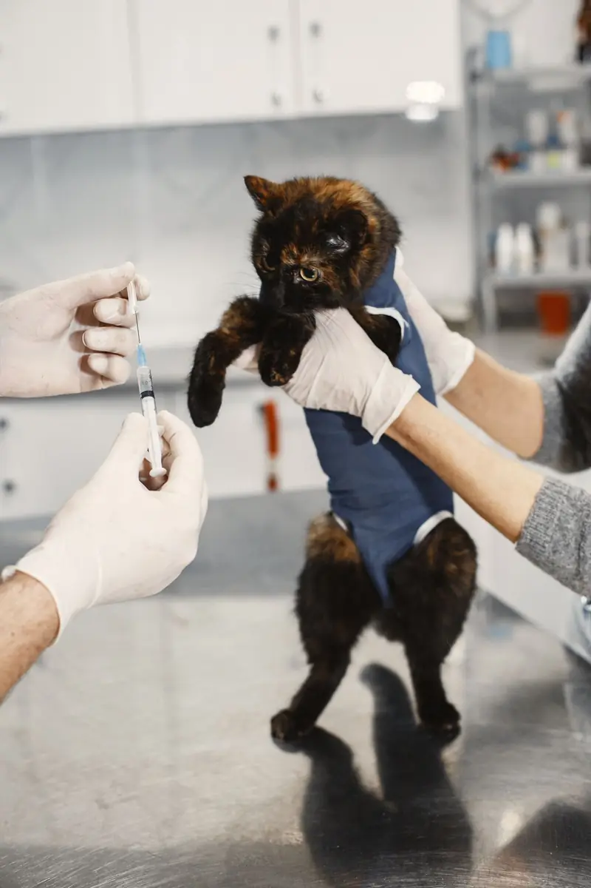

Vacunas para perros y gatos en Sevilla
Vacunamos perros y gatos desde cachorros: polivalente desde unos 32 €, antirrábica desde unos 22 €, trivalente felina desde unos 30 €, siempre con revisión previa. Pides cita por WhatsApp y te decimos el hueco.

4,7 · 128 reseñas de ejemplo
Ver las reseñas¿Qué edad tiene tu mascota?
Cachorro (6 a 16 semanas)
- Perro: primera vacuna polivalente hacia las 6–8 semanas, con refuerzos cada 3–4 semanas hasta las 16.
- Perro: la antirrábica llega a partir de las 12 semanas.
- Gato: trivalente desde las 8 semanas, con refuerzo a las 3–4 semanas. Leucemia felina según riesgo.
Primer año (12 meses)
- Perro: refuerzo de la polivalente al año de la primera pauta y antirrábica.
- Gato: refuerzo de la trivalente y, si sale a la calle, leucemia felina.
- Aprovechamos para desparasitar y revisar.
Adulto (1 a 8 años)
- Perro: refuerzo anual de la polivalente y antirrábica.
- Gato: refuerzo anual de la trivalente; leucemia si convive con gatos que salen.
- Un avisador de recordatorio por WhatsApp te evita el despiste.
Senior (más de 8 años)
- Misma pauta de refuerzos, pero con una revisión más completa.
- La veterinaria valora si conviene una analítica antes de vacunar.
- Si tiene alguna enfermedad crónica, se adapta la pauta.
Pauta orientativa; la fija la veterinaria tras ver la cartilla y al animal.
¿Cuánto cuesta vacunar?
| Vacuna | Para | Desde |
|---|---|---|
| Polivalente | Perro | 32 € |
| Antirrábica | Perro | 22 € |
| Trivalente | Gato | 30 € |
| Leucemia felina | Gato | 35 € |
Todas incluyen la revisión previa. Precios orientativos, octubre de 2026; el final se confirma al ver al animal. Microchip, desparasitación y más en tarifas.
¿Qué pasa el día de la vacuna?
- Revisión
La veterinaria le escucha y le mira.
Peso, corazón, boca, piel. Si hoy no está bien para vacunar, se aplaza.
- Pinchazo
Un pinchazo rápido.
Con calma y sin prisas.
- Cartilla
Se anota en la cartilla.
Tienes la fecha y la vacuna puesta, con sello.
- Recordatorio
Te avisamos de la siguiente.
Te escribimos por WhatsApp unos días antes de la próxima.
“Dice Nube que ni notó la vacuna.”
Dudas de vacunas.
¿Cuándo hay que vacunar a un cachorro?
A partir de las 6–8 semanas, con refuerzos cada 3–4 semanas hasta las 16 semanas. La antirrábica se pone desde las 12 semanas. La veterinaria fija las fechas.
¿Cuánto cuesta vacunar a un perro en Sevilla?
La polivalente, desde unos 32 € y la antirrábica, desde unos 22 €. La revisión previa va incluida. Son precios orientativos.
¿Cada cuánto se vacuna un perro adulto?
Una vez al año, con refuerzo de polivalente y antirrábica. Te escribimos unos días antes para que no se te pase.
¿Es obligatoria la vacuna de la rabia en Andalucía?
En perros, sí es obligatoria. Te confirmamos la fecha y lo anotamos en la cartilla.
¿Hay que vacunar a un gato que no sale de casa?
Sí, la trivalente conviene igualmente: los virus pueden entrar en casa en la ropa o los zapatos. La leucemia felina depende del riesgo; lo valora la veterinaria.
¿Puedo vacunar sin cita?
Mejor con cita: nos organizamos y te evitamos esperas. Pídela por WhatsApp o al 955 000 000.
Y además: microchip y desparasitación · peluquería · castración
Que se vacune sin enterarse.
Te damos cita por WhatsApp y te escribimos antes de la siguiente.
955 000 000 · C. de la Muestra, 12 · L-V 10:00-18:00